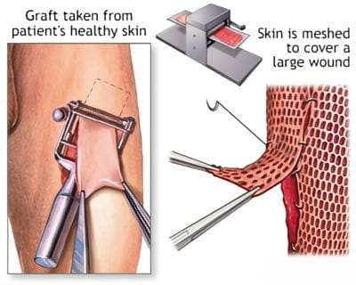

The successful management of deep partial-thickness and full-thickness wounds relies on the prompt excision of necrotic tissue (eschar) and the immediate application of a biological cover. Leaving a wound bed exposed dramatically increases the risk of fluid loss, hypothermia, and deadly systemic infections such as sepsis. Historically, the clinical triad of biological wound coverage has consisted of autografts, allografts, and xenografts.
Each of these traditional grafting modalities possesses distinct immunological properties, clinical indications, and limitations. The selection of graft material is dictated by the extent of the patient's injury, the availability of healthy donor sites, and the immediate necessity for physiological stabilization. The table below outlines the comparative clinical profiles of these three traditional tissue sources.
| Graft Type | Biological Source | Immunological Response | Clinical Role & Limitations |
|---|---|---|---|
| Autograft | The patient's own healthy tissue (same individual). | No Rejection. Fully histocompatible. Integrates permanently. | Gold Standard. Provides permanent closure. Limited by donor site availability in extensive burns; causes additional pain and scarring at the donor site. |
| Allograft (Homograft) |
Human cadaveric skin (same species, different genetics). | Temporary. Triggers strong alloimmune rejection, typically sloughing off in 1–3 weeks. | Biological Dressing. Used to temporarily stabilize severe burns when autografts are unavailable. High cost and slight risk of disease transmission. |
| Xenograft (Heterograft) |
Animal skin (different species, predominantly porcine/pig). | Temporary. Triggers rapid and aggressive xenogeneic immune rejection (hyperacute). | Temporary Coverage. Used primarily for superficial burns to reduce pain and fluid loss until the wound epithelializes. Readily available but lacks human dermal matrix properties. |
As indicated above, autologous skin grafting (autografting) remains the unequivocal gold standard in burn surgery. Because the tissue is harvested from the patient's own body, there is absolute genetic histocompatibility, entirely eliminating the risk of immunological rejection. Once an autograft successfully undergoes plasmatic imbibition and neovascularization, it provides permanent, durable wound closure that closely mimics the biomechanical properties of the original skin.
The clinical application of an autograft is a highly systematic surgical procedure. Healthy skin is typically harvested from the thighs, buttocks, or back using a specialized surgical instrument called a dermatome, which can be calibrated to slice the skin at precise micrometric depths (producing split-thickness grafts).

As shown in Fig iv, once the tissue is harvested and meshed to increase its surface area, it is carefully secured over the excised wound bed using surgical staples, sutures, or fibrin glues. A compressive bolster dressing is then applied to prevent shearing forces and eliminate dead space, ensuring the graft remains in direct contact with the vascularized wound bed to facilitate inosculation.
However, the reliance on autografts presents a profound paradox in massive burn trauma: the patients who need skin the most have the least amount available. In extensive thermal injuries exceeding 50% of the Total Body Surface Area (TBSA), there is insufficient uninjured skin to provide immediate permanent coverage.
Furthermore, harvesting an autograft essentially creates a secondary wound (donor site morbidity), subjecting the patient to additional physiological stress, pain, blood loss, and risk of infection. When autologous donor sites are exhausted, surgeons must bridge the gap to survival using temporary biological covers.
This necessitates the use of allogeneic and xenogeneic tissues, which function strictly as advanced, physiological bandages to buy the patient time while their limited donor sites heal and become available for re-harvesting.
Allografts, commonly sourced from screened human cadavers through specialized tissue banks, serve as the premier temporary biological dressing for catastrophic burns. Unlike synthetic bandages, allografts contain an intact human extracellular matrix (ECM) and native collagen architecture. When placed on an excised burn wound, the allograft acts physiologically like native skin: it prevents evaporative fluid loss, restores the thermoregulatory barrier, severely restricts bacterial colonization, and actively promotes underlying granulation tissue formation.
Crucially, allografts can briefly achieve vascularization (inosculation) with the patient's wound bed. However, because the tissue expresses foreign Major Histocompatibility Complex (MHC) antigens, it inevitably triggers a robust cellular immune response. The patient's T-lymphocytes recognize the graft as foreign, leading to cell-mediated rejection. Within two to three weeks, the graft undergoes necrosis and sloughs off, necessitating its surgical removal and replacement. Additionally, despite rigorous serological screening and cryopreservation protocols at tissue banks, allografts carry a theoretical risk of viral disease transmission (such as HIV or Hepatitis) and represent a significant financial burden to healthcare systems due to intense processing and storage requirements.
In scenarios where human cadaveric skin is unavailable or prohibitively expensive, xenografts are employed. Porcine (pig) skin is the most common biological source due to its structural and morphological similarities to human skin. Xenografts are highly effective at providing immediate pain relief and preventing fluid loss in partial-thickness burns. However, because the genetic divergence between humans and pigs is profound, xenografts are rejected much faster than allografts—often undergoing hyperacute or acute rejection within days. Consequently, they rarely achieve true vascularization and act more as an inert biological shield rather than an interactive tissue.
The inherent limitations of these traditional methodologies—donor site morbidity for autografts, and the transient, immunoreactive nature of allografts and xenografts—highlight a critical void in reconstructive medicine. This pressing clinical need has driven scientific innovation away from simple tissue transfer and toward the era of regenerative medicine, culminating in the development of bioengineered skin substitutes.